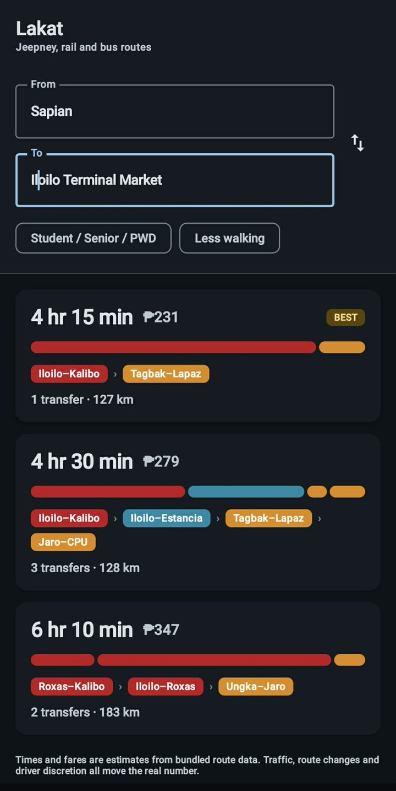
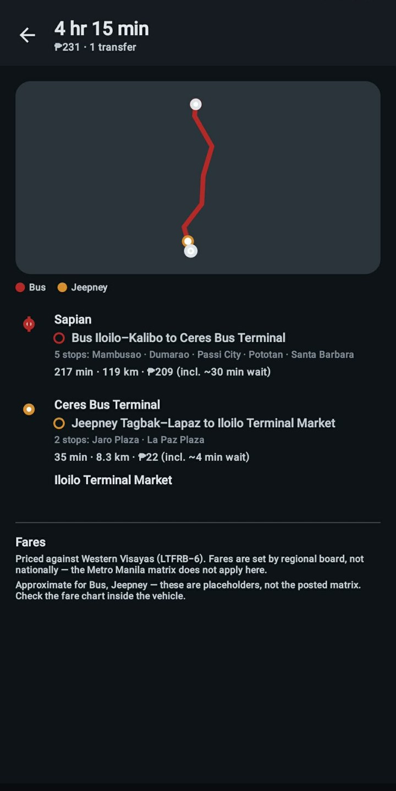

Featured · Android · Kotlin · Running on device
Lakat
A trip planner for Panay Island.
Plans a journey across Iloilo City jeepneys, Ceres buses, provincial vans and tricycles, and tells you what it will cost. Existing planners stop at the city limits; Lakat handles the part where you take a jeep to the terminal, a bus to Kalibo and a van the rest of the way.
Everything runs on the device. No server, no API key, and no network permission in the manifest at all. The routing engine is pure Kotlin with no Android dependency, so it compiles and tests on a plain JVM.


MultiModalRouter.kt · the search state
// A stop alone cannot express a transfer penalty: by the time
// the search arrives it has forgotten which vehicle it rode in on.
state = (stop, route currently aboard)
// riding one more stop on the same route -> free
// boarding a different route -> wait + transfer penalty- ▹ Hand-written A* search over a route-expanded state space, not a library
- ▹ Heuristic admissibility proven by test, not asserted: the same code runs as Dijkstra at zero heuristic weight and both must return identical costs
- ▹ 19 unit tests covering fares, transfers, the spatial index and itinerary continuity
- ▹ GitHub Actions builds and tests every push, and publishes a signed APK on tag